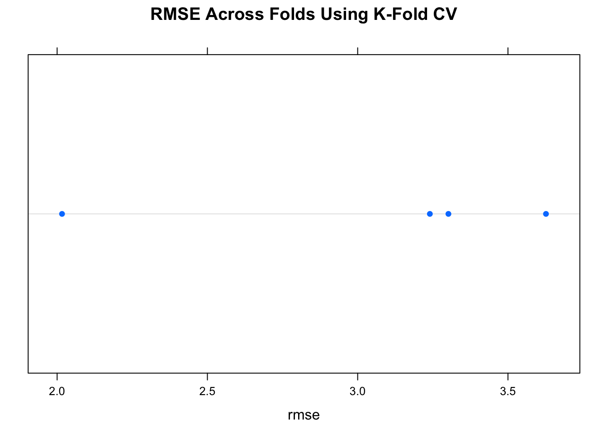
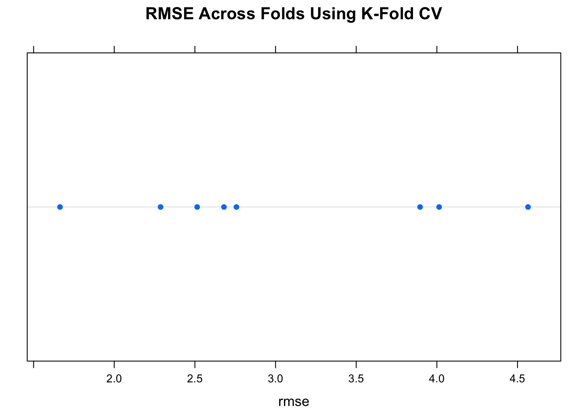
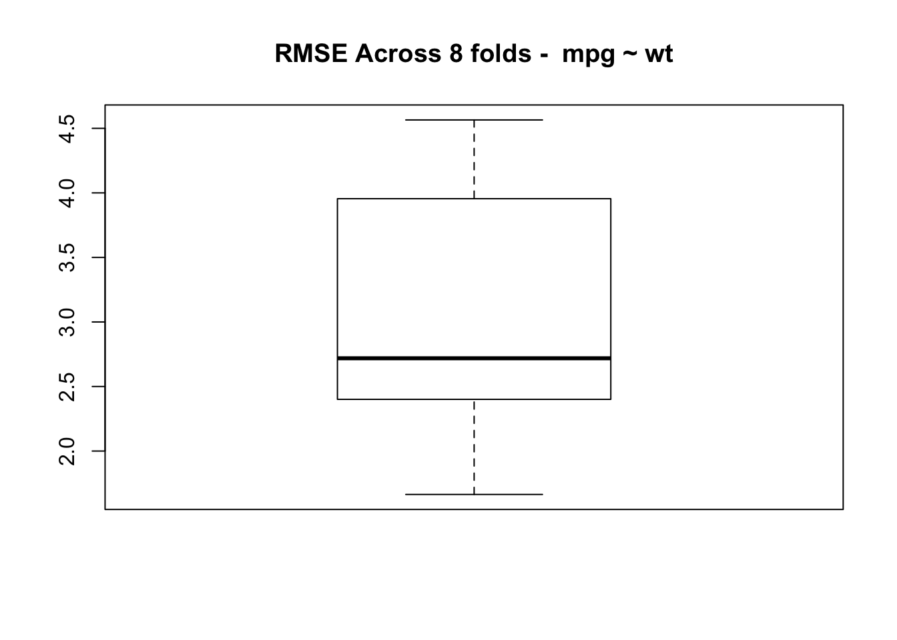

Chapter 4 Training / Test Data
https://www.stat.berkeley.edu/~aldous/157/Papers/shmueli.pdf
Predictive power is assessed using metrics computedfrom a holdout set or using cross-validation (Stone,1974; Geisser,1975)
Testing the procedure on the data that gaveit birth is almost certain to overestimate performance”(Mosteller and Tukey,1977).
Let’s extend this idea of training and test splits. Remember, our goal is to generate a robust model that better estimates out-of-sample error. We can do this by resampling our data set in a way that allows us to learn from the data but not so much so that it follows the data set too closely.
We can take a single data set and partition / split it into a number of train / test subsets. We just did that in the earlier section but we only did it once. If we do this a number of times we hope we are training our model more effectively.
What would the RMSE look like if we created say K number of subsets of the data frame and selectively held out each of the K subsets, built a model on the combined remaining subsets, and then tested the model on the holdout ? We would then average the RMSE to get an idea of its variation. The series of sequential steps would be as follows:
Subset the data frame into k groups
For each subset:
Consider the subset as a "hold out"" or test data set
Combine the remaining subsets as a training data set
Fit a model on the combined training set
Evaluate the model using the holdout test set
Save the evaluation score (e.g. RNSE)
Summarize evaluation score (e.g. mean of RMSE)This is called K-Fold Cross Validation. Here is the general idea in illustrated form relative to mtcars. Assume we want 4 folds. We would divide the data frame into 4 folds of 8 records each. The first model would be built using Fold 1 as the holdout / test data set after first combining Folds 2,3 and 4 into a training set set

So the second iteration would then take the second fold as the holdout / test data frame and combine Folds 1,3, and 4 into a training data frame.

# Generates Some Folds
num_of_folds <- 8
# This generates 8 groups of 4 indices such that each
# group has unique observations. No observation is used
# more than once - although we could use bootstrapping
folds <- split(sample(1:nrow(mtcars)),1:num_of_folds)
# We should have 32 indicies across the 8 groups
sum(sapply(folds,length))## [1] 32Check out the folds to get a better understanding of what is going on. We generated a list that has 8 elements each of which holds a 4 element vector corresponding to indices for records in the mtcars data frame.
folds## $`1`
## [1] 32 28 9 15
##
## $`2`
## [1] 4 27 30 10
##
## $`3`
## [1] 2 13 22 18
##
## $`4`
## [1] 3 26 29 16
##
## $`5`
## [1] 19 12 6 1
##
## $`6`
## [1] 8 21 24 5
##
## $`7`
## [1] 17 11 20 23
##
## $`8`
## [1] 31 7 25 14Again, each list element has the indices of four unique observations from the data frame. We have eight folds with four elements each for a total of 32 numbers corresponding to row numbers from the mtcars data frame.
4.1 Cross Fold Validation
To implement the cross validation, we will create a processing loop that will execute once for each of the 8 folds. During each execution of the loop we will create a model using data combined from all folds except the fold corresponding to the current loop number (e.g, 1, 2, .. 8).
Once the model is built we then test it on the fold number corresponding to the current loop number.
So now we can create some lists to contain the models that we make along withe the associated predictions, errors and computed RMSE. We we can inspect any of the intermediate results after the fact to validate our work or look more closely at any specific result.
# Next we setup some blank lists to stash results
folddf <- list() # Contains folds
modl <- list() # Hold each of the K models
predl <- list() # Hold rach of the K predictions
rmse <- list() # Hold the computed rmse for a given model
# Now, for each of the 8 subgroups of holdout data we will
# create a lda model based on all the data *except* the
# holdout group
for (ii in 1:length(folds)) {
# This list holds the actual model we create for each of the
# 10 folds
modl[[ii]] <- lm(formula = myform,
data = mtcars[-folds[[ii]],]
)
# This list will contain / hold the models build on the fold
predl[[ii]] <- predict(modl[[ii]],
newdata=mtcars[folds[[ii]],],
type="response")
# This list will hold the results of the confusion matrix
# function. This obkect will contain info on the
# accuracy, sensitivity/recall, specificity
# and so on for each model per fold
errors <- predl[[ii]]-mtcars[folds[[ii]],]$mpg
rmse[[ii]] <- sqrt(mean(errors^2))
}The above list structures allow us to drill down into any aspect of the models and predictions we have made for each of the 8 folds. More importantly we can see how well the model works against each of the individual holdout / test data sets. In the end, we just want to be able to look at the average RMSE across the folds. This gives us clues as to how good the model might perform against new data.
rmse <- unlist(rmse)
lattice::dotplot(rmse,
main="RMSE Across Folds Using K-Fold CV")
mean(rmse)## [1] 2.836787sd(rmse)## [1] 1.2266894.2 Create A Function To Automate Things
Since we have gone to the trouble of creating a loop structure to process the folds, we could easily turn this into a function to automate the splitting of the data frame across some arbitrary number of folds just to get an idea of how the RMSE looks for different numbers of folds.
We could even have our function accommodate different formula if we wanted but we won’t focus on that right now. You will soon discover that the caret package does these kinds of things for you but we aren’t quite there yet.
make_mtcars_model <- function(formula=myform, num_of_folds=8) {
folds <- split(sample(1:nrow(mtcars)),1:num_of_folds)
modl <- list()
predl <- list()
rmse <- list()
# Now, for each of the 10 subgroups of holdout data we will
# create a lda model based on all the data *except* the
# holdout group
for (ii in 1:length(folds)) {
# This list holds the actual model we create for each of the folds
modl[[ii]] <- lm(formula = myform,
data = mtcars[-folds[[ii]],]
)
# This list will contain / hold the models build on the fold
predl[[ii]] <- predict(modl[[ii]],
newdata=mtcars[folds[[ii]],],
type="response")
# Let's compute the RMSE and save it
errors <- predl[[ii]]-mtcars[folds[[ii]],]$mpg
rmse[[ii]] <- sqrt(mean(errors^2))
}
return(rmse=unlist(rmse))
}Let’s look at the average RMSE across 4 folds.
num_of_folds <- 4
rmse <- make_mtcars_model(num_of_folds)
title <- paste("RMSE Across",num_of_folds,
"folds - ",as.character(deparse(myform)),sep=" ")
print(mean(rmse))## [1] 3.101069lattice::dotplot(rmse,
main="RMSE Across Folds Using K-Fold CV")
sd(rmse)## [1] 1.023162boxplot(rmse,main=title)
4.3 Repeated Cross Validation
Since we already have an existing function we can up the ante by repeating the cross validation. This will provide more data on how the RMSE might be distributed across multiple runs, each of which does Cross Fold validation. This example will repeat a 4 Fold Cross Validation , 20 times.
num_of_folds <- 4
# Just to be clear - here is what happens when we call the function
# once. We get back 4 RMSE values - one for each fold
(rmse <- make_mtcars_model(num_of_folds))## [1] 1.612224 1.691929 4.588066 2.162759 3.224372 2.306210 4.346795 3.624653# Now we repeat this some number of times - like 10. So we get back
# 80 RMSE values
repeated_cv_rmse <- sapply(1:20,make_mtcars_model)
boxplot(repeated_cv_rmse,
main="RMSE Across 20 Repeats of 4 CV Folds")title <- paste("RMSE Across",num_of_folds,
"folds - ",as.character(deparse(myform)),sep=" ")
mean(as.vector(repeated_cv_rmse))## [1] 3.012351boxplot(repeated_cv_rmse)
summary(repeated_cv_rmse)## V1 V2 V3 V4
## Min. :1.867 Min. :1.665 Min. :0.4025 Min. :1.069
## 1st Qu.:2.427 1st Qu.:2.466 1st Qu.:2.0932 1st Qu.:2.210
## Median :2.873 Median :2.977 Median :2.4714 Median :2.647
## Mean :3.055 Mean :3.060 Mean :2.8247 Mean :2.966
## 3rd Qu.:3.783 3rd Qu.:3.872 3rd Qu.:4.2728 3rd Qu.:3.529
## Max. :4.339 Max. :4.494 Max. :4.7135 Max. :5.389
## V5 V6 V7 V8
## Min. :1.028 Min. :1.315 Min. :1.557 Min. :1.901
## 1st Qu.:2.592 1st Qu.:2.343 1st Qu.:2.341 1st Qu.:1.989
## Median :3.315 Median :3.205 Median :2.564 Median :2.616
## Mean :3.127 Mean :3.050 Mean :3.073 Mean :2.868
## 3rd Qu.:3.770 3rd Qu.:4.082 3rd Qu.:3.495 3rd Qu.:3.010
## Max. :4.876 Max. :4.344 Max. :6.149 Max. :5.298
## V9 V10 V11 V12
## Min. :1.476 Min. :1.944 Min. :1.521 Min. :1.515
## 1st Qu.:1.972 1st Qu.:2.012 1st Qu.:2.574 1st Qu.:2.283
## Median :2.939 Median :3.052 Median :3.049 Median :2.725
## Mean :3.022 Mean :3.125 Mean :3.029 Mean :3.026
## 3rd Qu.:3.330 3rd Qu.:3.982 3rd Qu.:3.698 3rd Qu.:4.120
## Max. :5.690 Max. :4.883 Max. :4.199 Max. :4.583
## V13 V14 V15 V16
## Min. :1.441 Min. :1.673 Min. :1.283 Min. :1.373
## 1st Qu.:1.960 1st Qu.:2.577 1st Qu.:2.148 1st Qu.:2.328
## Median :2.754 Median :2.866 Median :2.759 Median :3.275
## Mean :2.941 Mean :3.056 Mean :2.909 Mean :3.055
## 3rd Qu.:4.190 3rd Qu.:3.939 3rd Qu.:3.486 3rd Qu.:4.031
## Max. :4.570 Max. :4.147 Max. :5.203 Max. :4.192
## V17 V18 V19 V20
## Min. :1.504 Min. :1.903 Min. :1.697 Min. :1.193
## 1st Qu.:2.104 1st Qu.:2.409 1st Qu.:2.143 1st Qu.:2.396
## Median :2.569 Median :2.901 Median :2.376 Median :2.705
## Mean :3.082 Mean :3.051 Mean :2.897 Mean :3.031
## 3rd Qu.:4.412 3rd Qu.:3.943 3rd Qu.:3.667 3rd Qu.:3.244
## Max. :5.026 Max. :4.220 Max. :5.047 Max. :5.8374.4 Bootstrap
An alternative to K-Fold Cross Validation is to use the bootstrap sampling approach which will produce training data sets the same size as the original data set although some observations might be repeated as the sampling process is done with replacement. The observations that do not appear in each of the training sets are then used as a test set. These observations are known as “out of bag samples”. We’ll make a function to do bootstrap sampling.
make_mtcars_boot <- function(formula=myform, num_of_folds=8) {
modl <- list()
predl <- list()
rmse <- list()
# Now, for each of the 10 subgroups of holdout data we will
# create a lda model based on all the data *except* the
# holdout group
for (ii in 1:length(folds)) {
training_boot_idx <- sample(1:nrow(mtcars),replace=TRUE)
test_boot_idx <- !(1:32 %in% training_boot_idx)
# This list holds the actual model we create for each of the folds
modl[[ii]] <- lm(formula = myform,
data = mtcars[training_boot_idx,]
)
# This list will contain / hold the models build on the fold
predl[[ii]] <- predict(modl[[ii]],
newdata=mtcars[test_boot_idx,],
type="response")
# Let's compute the RMSE and save it
errors <- predl[[ii]]-mtcars[test_boot_idx,]$mpg
rmse[[ii]] <- sqrt(mean(errors^2))
}
return(rmse=unlist(rmse))
}num_of_folds <- 8
# Just to be clear - here is what happens when we call the function
# once. We get back 8 RMSE values - one for each fold
(rmse <- make_mtcars_boot(num_of_folds))## [1] 3.367523 3.117848 3.959684 2.648809 3.174338 2.083647 1.524263 2.803038# Now we repeat this some number of times - like 10. So we get back
# 80 RMSE values
repeated_rmse <- sapply(1:20,make_mtcars_boot)
boxplot(repeated_rmse,main="RMSE Across 20 Repeats of 4 Boostrap Folds")
title <- paste("RMSE Across",num_of_folds,
"folds - ",as.character(deparse(myform)),sep=" ")
boot_repeated_rmse <- as.vector(repeated_rmse)
boxplot(boot_repeated_rmse)
# How does the RMSE from the boostrap approach compare to the
# K-Fold CV approach ?
print("Summary of Bootstrap RMSE")## [1] "Summary of Bootstrap RMSE"summary(boot_repeated_rmse)## Min. 1st Qu. Median Mean 3rd Qu. Max.
## 1.546 2.874 3.231 3.266 3.629 5.086print("Summary of CV")## [1] "Summary of CV"summary(repeated_cv_rmse)## V1 V2 V3 V4
## Min. :1.867 Min. :1.665 Min. :0.4025 Min. :1.069
## 1st Qu.:2.427 1st Qu.:2.466 1st Qu.:2.0932 1st Qu.:2.210
## Median :2.873 Median :2.977 Median :2.4714 Median :2.647
## Mean :3.055 Mean :3.060 Mean :2.8247 Mean :2.966
## 3rd Qu.:3.783 3rd Qu.:3.872 3rd Qu.:4.2728 3rd Qu.:3.529
## Max. :4.339 Max. :4.494 Max. :4.7135 Max. :5.389
## V5 V6 V7 V8
## Min. :1.028 Min. :1.315 Min. :1.557 Min. :1.901
## 1st Qu.:2.592 1st Qu.:2.343 1st Qu.:2.341 1st Qu.:1.989
## Median :3.315 Median :3.205 Median :2.564 Median :2.616
## Mean :3.127 Mean :3.050 Mean :3.073 Mean :2.868
## 3rd Qu.:3.770 3rd Qu.:4.082 3rd Qu.:3.495 3rd Qu.:3.010
## Max. :4.876 Max. :4.344 Max. :6.149 Max. :5.298
## V9 V10 V11 V12
## Min. :1.476 Min. :1.944 Min. :1.521 Min. :1.515
## 1st Qu.:1.972 1st Qu.:2.012 1st Qu.:2.574 1st Qu.:2.283
## Median :2.939 Median :3.052 Median :3.049 Median :2.725
## Mean :3.022 Mean :3.125 Mean :3.029 Mean :3.026
## 3rd Qu.:3.330 3rd Qu.:3.982 3rd Qu.:3.698 3rd Qu.:4.120
## Max. :5.690 Max. :4.883 Max. :4.199 Max. :4.583
## V13 V14 V15 V16
## Min. :1.441 Min. :1.673 Min. :1.283 Min. :1.373
## 1st Qu.:1.960 1st Qu.:2.577 1st Qu.:2.148 1st Qu.:2.328
## Median :2.754 Median :2.866 Median :2.759 Median :3.275
## Mean :2.941 Mean :3.056 Mean :2.909 Mean :3.055
## 3rd Qu.:4.190 3rd Qu.:3.939 3rd Qu.:3.486 3rd Qu.:4.031
## Max. :4.570 Max. :4.147 Max. :5.203 Max. :4.192
## V17 V18 V19 V20
## Min. :1.504 Min. :1.903 Min. :1.697 Min. :1.193
## 1st Qu.:2.104 1st Qu.:2.409 1st Qu.:2.143 1st Qu.:2.396
## Median :2.569 Median :2.901 Median :2.376 Median :2.705
## Mean :3.082 Mean :3.051 Mean :2.897 Mean :3.031
## 3rd Qu.:4.412 3rd Qu.:3.943 3rd Qu.:3.667 3rd Qu.:3.244
## Max. :5.026 Max. :4.220 Max. :5.047 Max. :5.837